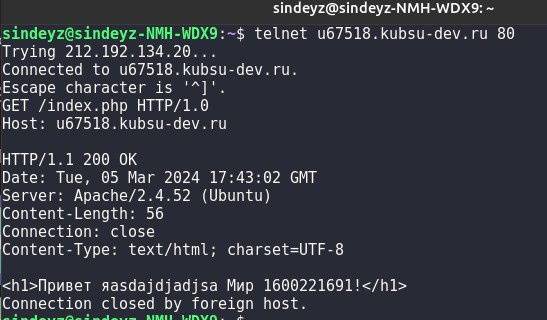
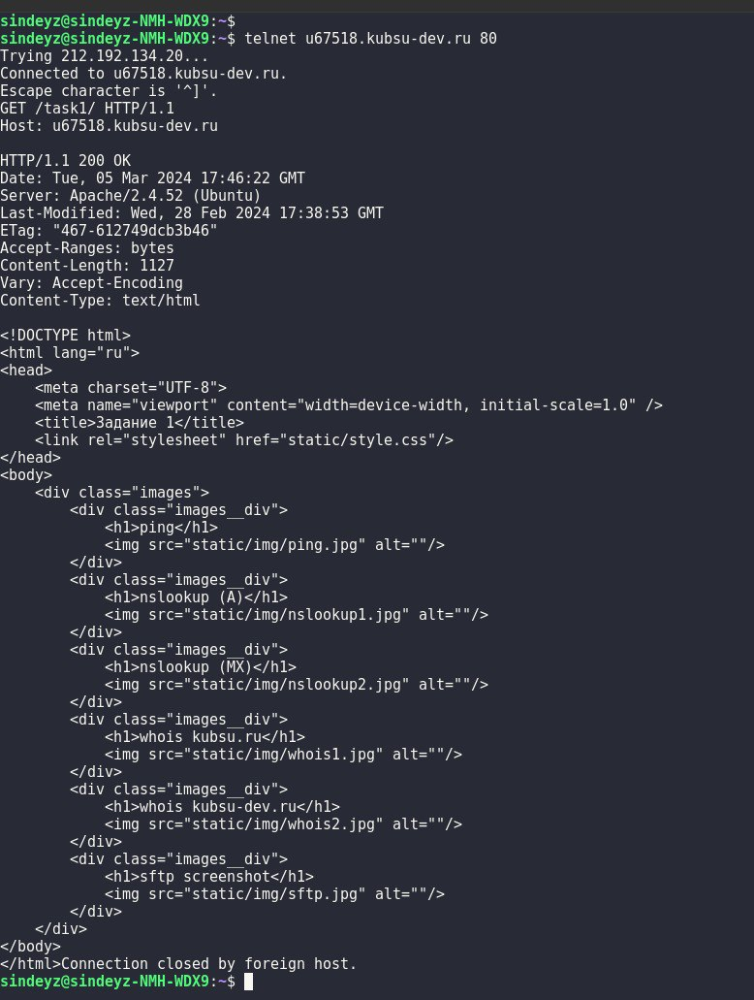
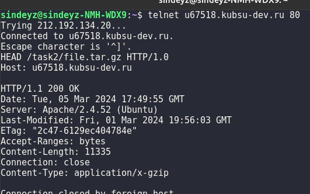
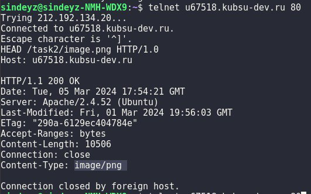
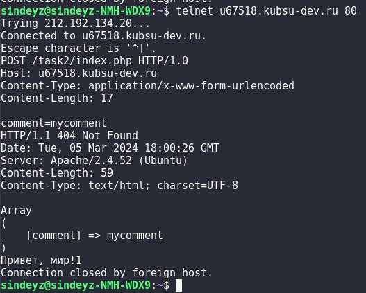
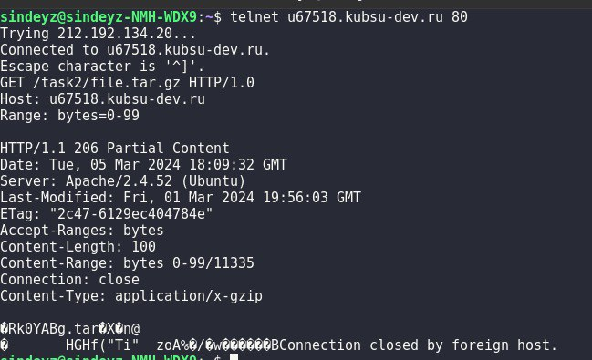
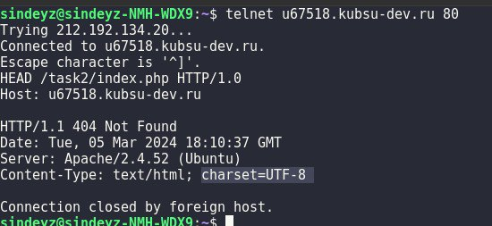

Получить главную страницу методом GET в протоколе HTTP 1.0

Получить внутреннюю страницу методом GET в протоколе HTTP 1.1

Определить размер файла file.tar.gz, не скачивая его

Размер: 11335 байт
Определить медиатип ресурса /image.png

Медиатип: image/png
Отправить комментарий на сервер по адресу /index.php

Получить первые 100 байт файла /file.tar.gz

Определить кодировку ресурса /index.php
